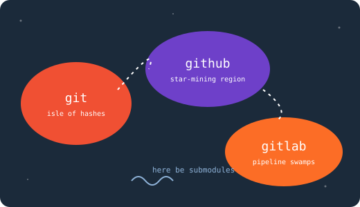

the merge goblin
appears only when two people edit line 42. feeds on <<<<<<<.
- threat
- high
- weakness
- talking to coworkers
a site by kai · mascot: kara eklund
an authoritative and entirely wrong field guide to git, github, and gitlab
git is a small, nocturnal creature that lives inside a folder called .git and hoards every thought you have ever had about a file. it was discovered in 2005 when a man became so annoyed that he accidentally invented it. git does not forget. git does not forgive. git merely rebases.
fix-final-2-real.github is a large public aquarium where git repositories are displayed for the public to stare at. visitors leave small gold stars as tribute. developers measure their spiritual worth by the density of green squares on their contribution graph, which is harvested annually like a rice paddy.
main by hand.gitlab is github's cousin who went to laboratory school. it does everything, then several more things, including things you did not know software could do. its pipelines are so long some have never been observed finishing. it says "merge request" because it prefers to ask rather than tug.
steps().pro tip: press ctrl + c repeatedly. it won't help, but it's cathartic.
<details name> — only one opens at a time. pure html.awakens the creature. once performed in your home directory, it cannot be unseen by your shell prompt.
feeds git everything within reach, including node_modules, .env, and a 4gb video named final.mov.
the industry-standard commit message. alternates include "stuff 2", "fix", and "please".
chud behavior. asserts dominance over coworkers. rewrites shared history. legally a declaration of war in 3 countries. see also: --force-with-lease, the polite knife.
a detective story in which you are always the culprit.
the underworld, where lost commits wait to be summoned. speak their hash three times.
binary search for the exact moment things went wrong. answer: tuesday.
take one commit from another branch. the other commits notice. they will remember.
summons repositories within repositories within repositories. the recursion does not end. it merely waits.
not a real command. yet. tracked in issue #1, opened 2008.
<meter> elements. percentage chance of ruining your afternoon.appears only when two people edit line 42. feeds on <<<<<<<.
a tireless creature that opens 30 prs every monday to bump a library you forgot existed.
shares no ancestry with anyone. lives alone. named gh-pages.
passes on tuesdays. fails when observed. quantum in nature.
retry: 3a 2gb psd committed in 2014. every clone carries its weight forever.
gitlab's guardian. has opinions about your .gitlab-ci.yml.
<map>. click a landmass to jump to its species.
report_v2_final_use_this.doc. dark age begins.| git | github | gitlab | |
|---|---|---|---|
| is a website | no | yes | yes, and a lifestyle |
| favorite color | red-orange | contribution green | tanuki orange |
| fears | merge conflicts | monday outages | feature scope limits |
| sleeps | never | during your deploy | in a kubernetes pod |
| calls it | a commit | a pull request | a merge request |
| spirit animal | raccoon | octocat | tanuki |
| config language | ini-ish | yaml | more yaml |
| would win in a fight | whoever runs --force first | ||
:has(), :user-invalid and :placeholder-shown. nothing is sent anywhere.
<details>.

<details>.typeof null is "object". we rest our case."i have been in a detached head state since 2019 and honestly i've never been more at peace."

{kind=link}